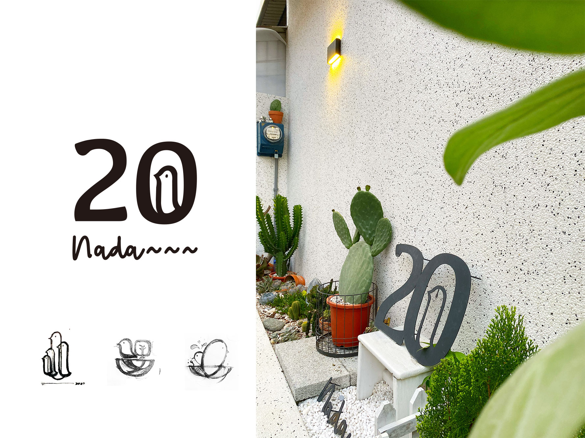
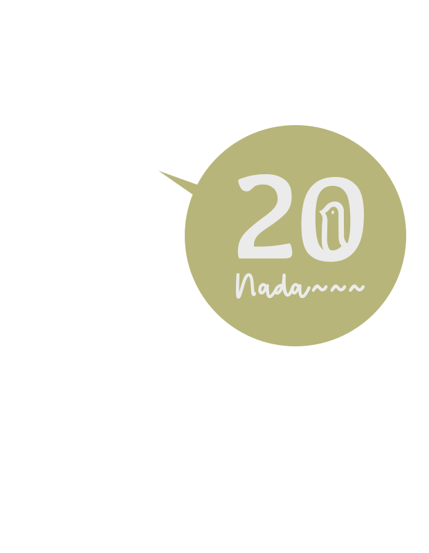

隆德 - Nada
Nada 是無 是延續，
承襲天地的自然循環，
療癒生活的過程，
享受季節替換的每一個當下，
一切皆無、一切皆喜悅，
一花 、一草 、一石 、一木
生命的延續將在此永恆。
註解：隆德為街名
構思起源於座落門牌20號，又在2019年12月20號完成買房，2020開始動工與入住，緣分開啟喜悅的篇章。 基於20作為符號基礎架構，整個主軸傳達“愛、當下、無、喜悅”四大主軸；翱翔於天際的鳥在無疆界天空飛翔，累了總需要回到原點停靠，而0的就是象徵回到最初將一切歸零，鳥兒回到最初擁抱當下，放下疆域外的一切靜靜的享受美好如初。

對於我們的生活與工作需要，
Nada 地理位置選擇路程約3分鐘上交流道與到機場約27分鐘的地方，
未來附近又規劃蓋捷運站以及公路轉運站，
對於老了以後無法在自駕就可依賴這樣的大眾交通工具。
